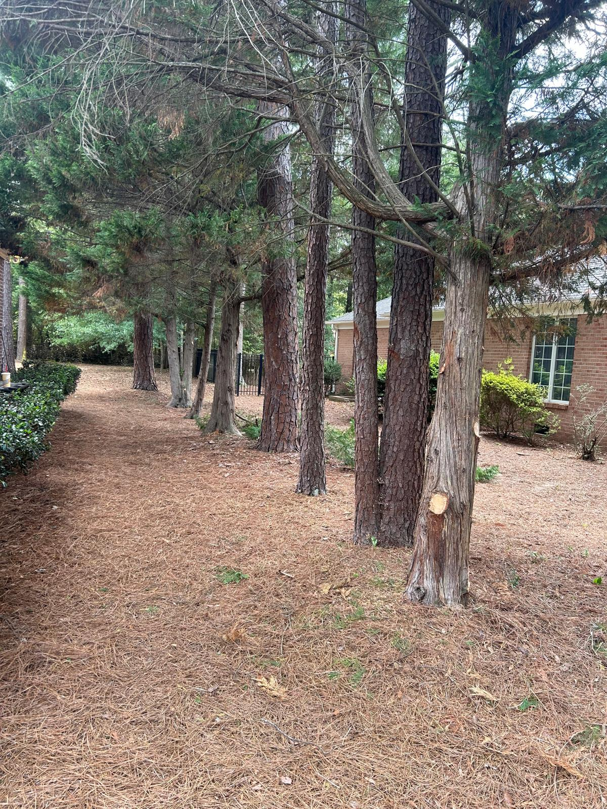
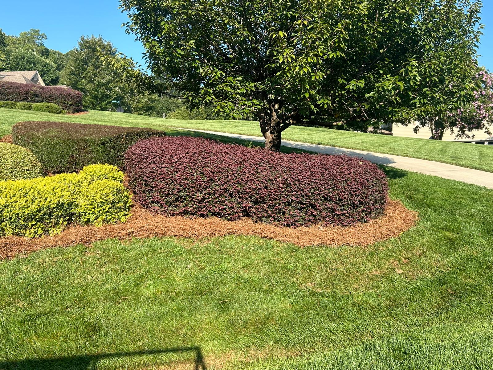
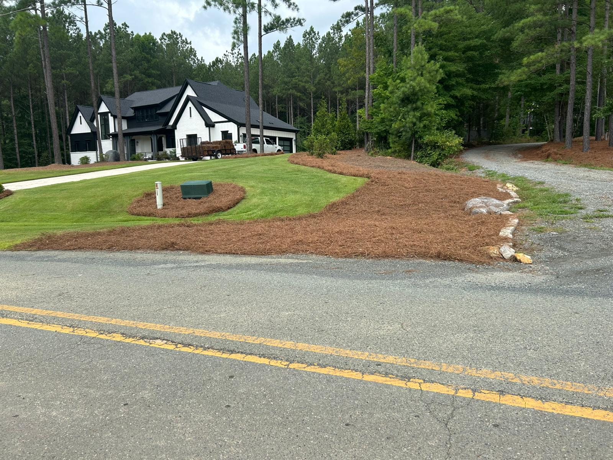

★★★★★
Raphael did an excellent job clearing very overgrown bushes from my father's yard. He was quick, conscientious and competent. Would definitely recommend and would use him again.

Professional Outdoor Property Care in Central North Carolina
Serving Central North Carolina with clean, reliable outdoor work that keeps your property looking fresh, well-maintained, and professionally cared for year-round.
Our Services
Explore our core services and see the type of outdoor work we provide across Central North Carolina.

Premium pine straw installation that gives your landscape a clean, natural, and well-maintained look.
View Service
Custom landscaping and design solutions that improve the beauty, structure, and feel of your outdoor space.
View Service
Professional tree trimming, removal, and stump work to keep your property safe and looking its best.
View Service
Reliable lawn care and maintenance services to keep your yard healthy, neat, and well-managed.
View Service
Exterior cleaning services that help refresh and protect your property, including gutters and power washing.
View ServiceWhy Choose Us
Homeowners across Central North Carolina choose us for reliable service, clean results, and attention to detail. We take pride in delivering outdoor work that looks professional and lasts.
Proudly backed by 5-star Google reviews from clients who value quality work, clear communication, and dependable service.
Service Area
We provide pine straw installation and outdoor property care across key areas in Central North Carolina, with service available in and around Raleigh, Clayton, Apex, Pittsboro, Wake Forest, Cary, Charlotte, and Greensboro.
Contact Us
Whether you need pine straw installation, landscaping, cleanup, or ongoing maintenance, we’re here to help. Call today and get a fast, straightforward quote.
Serving Central North Carolina with reliable, professional outdoor work.